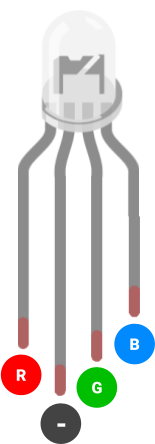

Project 4
RGB LED Dimmer
By Dylan Vu and Gavin Nguyen
Overview
You will learn how to use a single-board microcontroller. It's quite a leap from using just one IC, but don't worry. It'll be fun! You will program an Arduino Nano to control a dimmable RGB light. At each checkpoint, you will explore a core function of microcontrollers: digital input/output, pulse width modulation, and analog-to-digital conversion.
Concepts
Before you begin assembling the project, give this section a skim. You will find code snippets, explanations, and diagrams of the major electronics components you will use.
Arduino Nano
The Arduino Nano is a board based on an Atmega microchip. The chip itself contains the processor, RAM, and flash
storage. These components execute the programs we write.
The Arduino company designed several boards to make the Atmega chip hobbyist-friendly: they added a USB port, voltage
regulator, and onboard LEDs (among other things). In this family of boards are the Arduino Uno, Arduino Nano, and many,
many more!
 We'll stick with the Arduino Nano for now. On the right, you will see the Nano board.
We'll stick with the Arduino Nano for now. On the right, you will see the Nano board.
General Purpose Input/Output or GPIO, power, and reset pins run along the sides of the Nano.
In the lecture content, we discuss the different GPIO pin types and their use cases. We also use the Arduino programming
language (a C++ variant) to write and compile sketches. Learn more here.
We won't talk in depth about each function or data structure from the Arduino Library. When you need to read up on
Arduino code, refer to the Arduino Language Reference.
Pinout
Thinking about using a pin but you don't know what it does? Refer to the Arduino Nano pinout diagram. The full datasheet
is linked in the Parts section.
~ represents pins that are PWM capable.

Potentiometer
A potentiometer is a three-terminal component that acts as a variable voltage divider. The voltage of its output pin
ranges between the VCC and GND pin voltages, depending on the dial's position.

Using it with Arduino
We can connect the potentiometer's output pin to one of the Nano's analog pins (see its pinout above). Using
analogRead(), we interpret the pin's analog voltage as a discrete integer in the range 0-1023. This is the purpose of
the analog-to-digital converter or ADC inside the Nano's Atmega chip. The ADC is physical hardware that translates the
analog signal to a discrete digital signal.
RGB LED

For this project, we will use a common cathode RGB LED. Inside this component are just three smaller LEDs - one red, one
green, and one blue - that are all connected by a shared or common cathode.
This RGB LED has four pins: One is the cathode (ground), but the other three are the red, green, and blue LED anodes.
Using it with Arduino
In the world of digital electronics, color is often represented in the 8-bit RGB color model. Every visible color is
identified by an encoding of the three base colors: red, green, and blue. In our Arduino code, we will set the intensity
of each base color to a value in the range 0-255.
Try the RGB Color Picker. Notice how the three values in the RGB field change as you select different colors.
Recall that LEDs are current driven: we control the intensity of each RGB LED color by increasing/decreasing the current
passing through its pin. With an Arduino board, we set the voltage, which indirectly affects current flow (recall Ohm's Law).
Here's the rub: digitalWrite() only sets a pin's voltage to 0 or 5V. If we want to dim an LED, we need a new function
that can output voltages between 0 and 5.
We will use a pulse width modulation or PWM signal - a digital waveform mimicking analog voltage signals. With PWM
waves, we can generate analog voltages like 2.3V or 4.1V. In Arduino, we accomplish this using analogWrite().
Only some Nano pins are capable of PWM as indicated by the pinout above.
Software Installations
We will use the Arduino IDE to write code for our Arduino Nano board. The software includes a text editor, compiler, debugger, and library manager. While you may use any IDE of your choice, we highly recommend installing Arduino IDE, so you can follow our lectures and projects with ease.
Arduino IDE
Visit this link to download the installer for Arduino IDE 2.0.0+ . Make sure to select the installer appropriate for
your system.

Open the installer and follow its instructions. Easy peasy!
If you want to know more about using the Arduino IDE, check out our lecture content.
CH340 Driver
There is a small IC on the Nano board responsible for converting USB signals to a signal the Nano's Atmega chip can
understand. This ultimately allows us to connect our computer to the Nano over USB. That IC is called the CH340
microchip.
For your computer to connect with the Nano, we need to install a software driver that tells the computer how to
communicate with the CH340.
Visit this link to download the installer for the CH340 driver. You may have to scroll down the page a little. Make sure
to select the installer appropriate for your system.

Requirements
LED Blinker
- The LED in the circuit must blink once per second.
- The LED must be brightly lit when turned ON.
- The LED must be completely dark when turned OFF.
- The circuit must be built on a breadboard.
LED Dimmer
- The user must be able to adjust the LED's brightness from 0% to 100% when turning the potentiometer dial.
- When turning the potentiometer clockwise, the LED should brighten.
- When turning the potentiometer counter-clockwise, the LED should dim.
- The circuit must be built on a breadboard.
RGB LED Dimmer
- The user must be able to adjust the RGB LED to any color on the visible spectrum when turning the three potentiometer dials.
- Each potentiometer should control the light intensity of one of the three LED colors (red, green, and blue).
- When turning a potentiometer clockwise, its respective LED color should brighten.
- When turning a potentiometer counter-clockwise, its respective LED color should dim.
- The circuit must be built on a breadboard.
Parts
| Part Name | Qty |
|---|---|
| Jumper Wire | X? |
| Breadboard | 1 |
| Potentiometer, 10kΩ | 1 |
| LED, 3.2V | 1 |
| LED, RGB, Common Cathode | 1 |
| Arduino Nano | 1 |
| Resistor, 130Ω | 1 |
| Resistor, 430Ω | 2 |
| Resistor, 470Ω | 1 |
| Mini USB Cable | 1 |
Schematics
Instructions
Checkpoint 1
-
Build the circuit from Schematic A (LED Blinker) on your breadboard. You will design a blinking LED using the Arduino Nano.
Use the pseudo code below to program an LED that blinks on and off.These functions may be helpful: Serial.begin(), pinMode(), digitalWrite(), delay()
// Assign variable to pin number for LED void setup() { // Configure LED pin's behavior to OUTPUT // Configure the Serial baud rate } void loop() { // Set LED pin to HIGH // Delay // Set LED pin to LOW // Delay } - Upload your sketch to the Arduino Nano, and verify that the program executes as expected; the LED should blink intermittently.
Checkpoint 2
-
Build the circuit from Schematic B (LED Dimmer) on your breadboard. Your goal is to make the LED grow brighter as you twist the potentiometer.
Use the pseudo code below to program the circuit.These functions may be helpful:
Serial.begin(),pinMode(),analogRead(),analogWrite()// Assign variable to pin number for LED // Assign variable to pin number for Potentiometer void setup() { // Configure the LED pin's behavior to OUTPUT // Configure the Potentiometer's pin behavior to INPUT // Configure the Serial baud rate } void loop() { // Read potentiometer pin value // Set LED pin to the potentiometer pin value } - Upload your sketch to the Arduino Nano, and verify that the circuit meets the design requirements.
Checkpoint 3
- Build the circuit from Schematic C (RGB LED Dimmer) on your breadboard. No pseudo code this time! You are on your own.
- Upload your sketch to the Arduino Nano, and verify that the circuit meets the design requirements.
Deliverables (Enrolled Students Only)
Students enrolled in the course must submit the following deliverables to the corresponding Canvas course assignment:
-
Submit a video of the RGB LED Dimmer (Schematic C) on a breadboard to the Project 4 Canvas assignment.
In the video, use the potentiometers to create the colors yellow, magenta, and cyan.